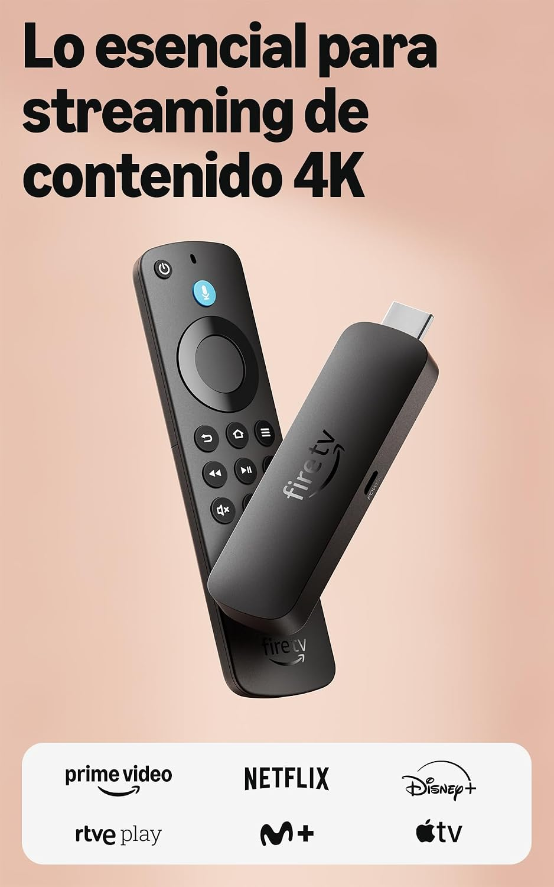

Amazon Fire TV Stick 4K Select
Un dispositivo de streaming 4K Ultra HD con HDR10+, wifi y mando con botón de voz para Alexa. La ficha describe una interfaz renovada en 2026, recomendaciones y la posibilidad de hablarle a Alexa para buscar qué ver o gestionar dispositivos de hogar digital compatibles. Menciona apps como Prime Video, Netflix, YouTube o Disney+, y avisa de que pueden aplicarse cargos de suscripción; también habla de episodios sin anuncios y de jugar en streaming con Xbox Game Pass Ultimate, que es un servicio aparte. Se enchufa al televisor y se conecta a la wifi. Lo vende y envía Amazon. Entrega anunciada el miércoles 18 de noviembre, con una opción más rápida para el 16. Valoraciones: 4,2 sobre 5, a partir de 13.913 opiniones.
69,99 €Amazon.es · vendido y enviado por Amazon · entrega anunciada el miércoles 18 de noviembre · en stock
Streaming 4K UHD con HDR10+, mando con Alexa, wifi. Las apps y el Game Pass pueden tener coste de suscripción, según la ficha.